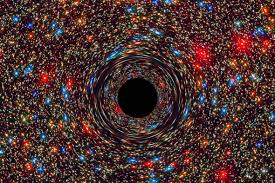
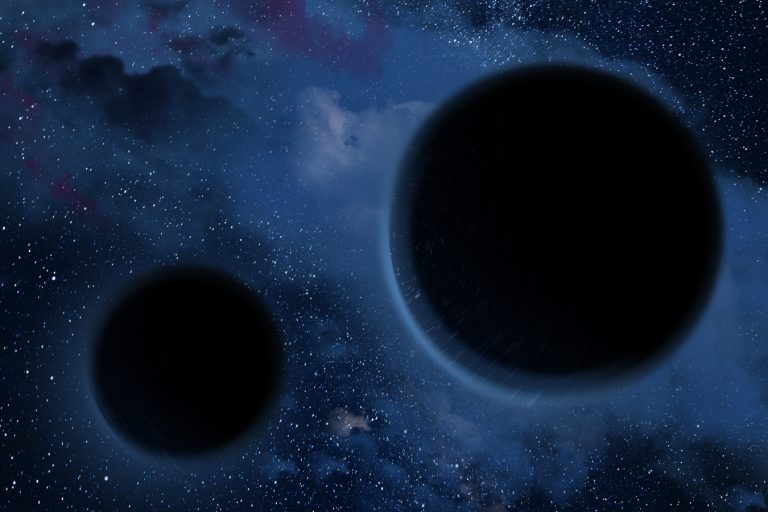
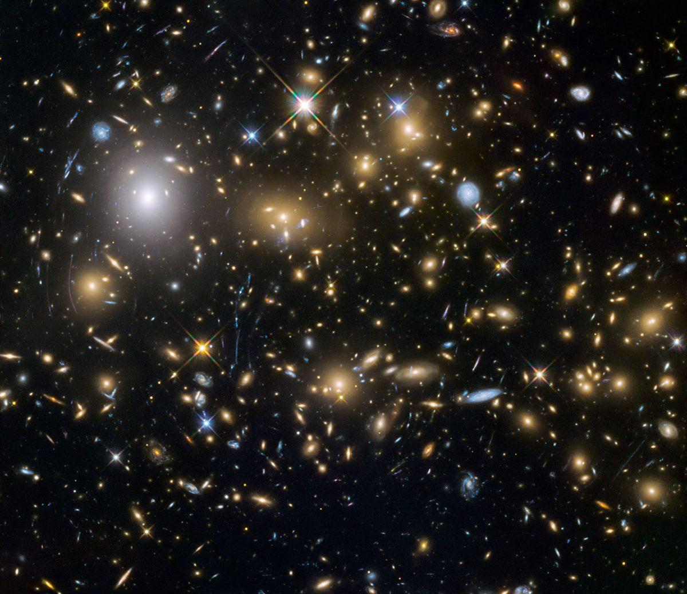

Classifications of Black Holes

Stellar-Mass Black Holes
Formation: These black holes are formed from the collapsed cores of massive stars after they exhaust their fuel and undergo a supernova explosion.
Mass: They typically range from a few to dozens of times the mass of our Sun.
Location: They are scattered throughout galaxies, including our Milky Way.

Supermassive Black Holes
Formation: The origin of supermassive black holes is still a mystery, but they are thought to form either through the direct collapse of gas clouds or by merging with other black holes.
Mass: They can be millions to billions of times more massive than our Sun.
Location: They reside at the centers of most galaxies.

Intermediate-Mass Black Holes
Formation: Their formation is less understood, and they may be formed by the merging of stellar-mass black holes or the direct collapse of larger gas clouds.
Mass: They have masses between stellar-mass and supermassive black holes.
Location: They are thought to be found in globular clusters and dwarf galaxies.

Primordial Black Holes
Formation: These are hypothetical black holes that are thought to have formed in the very early universe.
Mass: They are believed to be extremely small, potentially as small as an atom or smaller.
Detection: They have not been directly observed, and their existence is still debated.